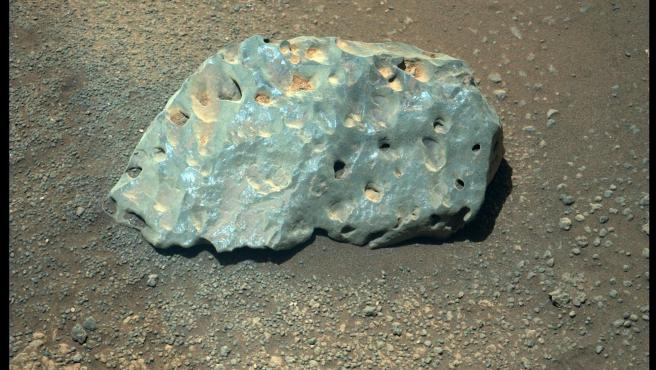

👽 La extraña roca verde que el Perseverance ha encontrado en Marte 👽
Aunque no es una noticia del día específicamente, se me hace súper interesante.
✨ Contexto ✨
El rover Perseverance de la NASA ha fotografiado en Marte una extraña roca de color verde que ha intrigado a sus científicos.
La imagen fue difundida a finales de marzo por la agencia espacial estadounidense. Su hallazgo se produjo mientras el rover
esperaba a que su compañero Ingenuity, el helicóptero que prevé realizar su primer vuelo extraterrestre, realizara sus primeras
maniobras.
Al observar las rocas cercanas, el rover se detuvo en esta "extraña" piedra de color verde, que tiene al equipo científico de la
misión Perseverance "intercambiando muchas hipótesis", ha asegurado la NASA.

💫 ¿Qué será? 🤔
Según ha explicado la agencia espacial, este peculiar objeto tiene 15 centímetros de largo y por ahora se desconoce su origen.
"Si miras de cerca, es posible que veas una fila de marcas de láser que hice para obtener más información", ha asegurado en
Twitter la cuenta oficial de la misión Perseverance.
"El equipo ha formulado muchas hipótesis diferentes: ¿es una roca local producto del desgaste? ¿Es un trozo de Marte que
llegó hasta esa área por un impacto lejano? ¿Es un meteorito? ¿O algo más?", se ha preguntado la NASA en la misma red social.
Para despejar el misterio, los científicos esperan que el láser del rover aún penetre la misteriosa roca. El láser mencionado
con anterioridad, es parte del impresionante instrumento SuperCam. Los científicos esperan que, con el tiempo, el láser brinde
más información sobre la composición de la extraña roca, lo que podría decirles si se formó en el lugar o fue transportada allí por algún proceso.
Si no se formó en su ubicación actual, es posible que el agua lo haya llevado al cráter Jezero o podría ser un meteorito como el que el rover Curiosity vio en 2014.